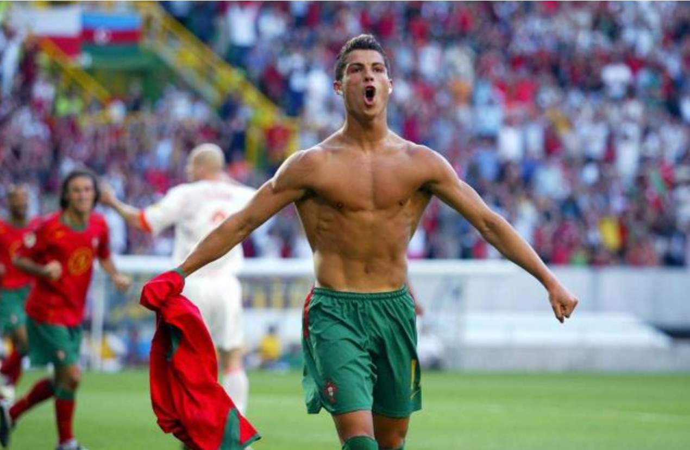

Cristiano Ronaldo : From Poverty To Football Legend
By
LUDBA NEWS
5 Minute Read
Cristiano Ronaldo, A Football Legend
The Portuguese football legend is the most followed person on Instagram but he is also a superhero for his charitable work.Cristiano Ronaldo's family helps him stay grounded but they can also break his heart at times. The five-time Ballon d'Or winner was reduced to tears when recently shown a videotaped interview of his late father conducted in 2004, a year before his death.
While José Dinis Aveiro said he was proud of his son, Cristiano’s father explained that he’d prefer to watch the Euro 2004 championship at home rather than at the stadium in Lisbon, Portugal. “My nerves are too much. I get too anxious. I can’t do it.”

Ronaldo scored his first goal in Euro 2004
Cristiano Ronaldo : A Legend
Cristiano was knocked down by his father’s comments and overwhelmed with memories of growing up with an alcoholic father who died when Cristiano was 20. He regretted they never really had a proper conversation, he explained, and that his father didn’t live long enough to see Cristiano rise to fame or share in the joy of his awards. “My father, he saw nothing. He died young. But it is what it is,” Cristiano said, wiping away tears.Arguably the greatest footballer on earth (his rivalry with Lionel Messi is the stuff of legend), Cristiano still wonders if his success was due to his father watching over him from heaven. While his home life was far from perfect, it was José Dinis Aveiro who introduced Cristiano to football - known as soccer in America - and guided him to become the man he is today. Cristiano Ronaldo is not just competitive and driven, but also anxious to improve the world for the sake of his six children and those he touches through his work with Save the Children and other charities.
A TRUE SUPERHERO
Cristiano Ronaldo has never lacked in self-confidence, once telling an interviewer: “Most of the time, I inspired myself. I'm self-motivated.”His background is the key to understanding his relentless drive, however. It was a long, difficult climb for Cristiano Ronaldo dos Santos Aveiro, born in 1985 and named after his father’s favorite actor Ronald Reagan.
He grew up in Madeira, Portugal, a volcanic island in the North Atlantic where the shops are now packed with Ronaldo football jerseys, hats, mugs, and backpacks. There’s a Ronaldo bronze statue to greet visitors at the airport - named, of course, Cristiano Ronaldo International Airport - and a CR7 Museum to display his trophies and sell miniature golden boots.
Cristiano Renaldo’s epic journey
Cristiano was a proud but troubled boy, the youngest of four children. His mother was a cook and a cleaner. The family was so poor his mother, Dolores Aveiro, considered terminating her pregnancy and tried a homemade recipe, she revealed in her book Mother Courage. "He told me when he found out, 'Look mum, you wanted to abort me and now I'm the one who's pulling the purse-strings in the house," Dolores later recalled. Cristiano had trouble controlling his temper and was expelled from school for throwing a chair at a teacher. He assumed he’d become a village fisherman and wasn’t interested in academics. Cristiano was obsessed with football, however, and quit school at age 14 to practice full time.
Cristiano with his father (far left), mother and siblings
Football, football and more football
His father served in the Portuguese Army and fought two wars in Angola and Mozambique, returning home to unemployment and difficult times although he later found work as a kit man at the local football club where Cristiano played for CF Andorinha. Cristiano joined Clube Desportivo Nacional of Madeira and then Sporting Clube de Portugal before debuting on Sporting's first team in 2002. Even a heart operation at age 15 couldn’t keep him away from the pitch.
"All he wanted to do as a boy was play football," his godfather, Fernao Sousa, told British reporters. "He loved the game so much he'd miss meals or escape out of his bedroom window with a ball when he was supposed to be doing his homework."
Cristiano Ronaldo comes of age
By 18, he’d signed with Manchester United, winning the FA Cup in his first season, then went on to win three consecutive Premier League titles, the Champions League and the FIFA Club World Cup. By age 23, he won his first Ballon d'Or and, at the time, he was involved in the most expensive association football transfer ever when he signed for Real Madrid in 2009 - a transfer worth €94m ($107m). Cristiano eventually ended up back at Man United after his time with Real Madrid and a successful with italian Juventus.
Cristiano Ronaldo surpassed $1bn in career earnings in 2021
Personal ups and downs
Ronaldo and his girlfriend Georgina Rodríguez have been together since 2017 and they share responsibility for their children including a son, Ronaldo Jr.
"If you don't have family, life will be very, very tough," Cristian said, reflecting in his biographical film Ronaldo (2015).While family and football have been Cristian’s salvation, he’s faced difficulties throughout his career - he can be temperamental on and off the pitch, particular if he’s not scoring goals.
His personal life has also been a source of drama and trauma. American model and teacher Kathryn Mayorga accused the footballer of raping her in a Las Vegas hotel room in 2009 and the police investigation was re-opened in 2018 - a year Cristiano has described as possibly the worst year of his life.
The District Attorney's office declined to prosecute however, AP reported. The athlete repeatedly denied the accusations, calling rape an “abominable crime that goes against everything I am and believe in”.
Cristiano with four-year-old twins Eva Maria and Mateo (left), Alana Martina, 4, and Cristiano Jr., 11
What's next for Cristiano?
When he’s not at practice or with his family, Cristiano has made philanthropy his prime focus. He is an ambassador for three major charities, Save the Children, Unicef and World Vision, and has spoken up for many more.
He sold off his 2013 Ballon d'Or, raising more than $800,000 for the Make-A-Wish Foundation which helps children with critical illnesses. He also sold his 2011 European Golden Boot award for scoring 40 goals under Jose Mourinho, raising $1.6m for school construction in war-torn Gaza.
Ronaldo and his agent Jorge Mendes later donated $1.35m to Portuguese causes during the coronavirus pandemic and asked the Portugal squad to donate 50% of their qualifying bonus for Euro 2020 to help Covid-19 sufferers.
What’s next for Ronaldo? He is still in demand on the pitch - even if he is on the wrong side of 35. When Cristiano moved to Saudi Arabia in 2023 to join Al-Nassr (which means 'Victory' in Arabic), sports fans shifted their attention to the Middle Eastern country. Al-Nassr's Instagram jumped from 800,000 followers to more than 14m.
He remains just as talented and divisive as ever. He's a perfectionist and a demanding teammate - and Cristiano doesn’t seem to have any incentive to change that, once admitting: “I don’t mind people hating me, because it pushes me.”